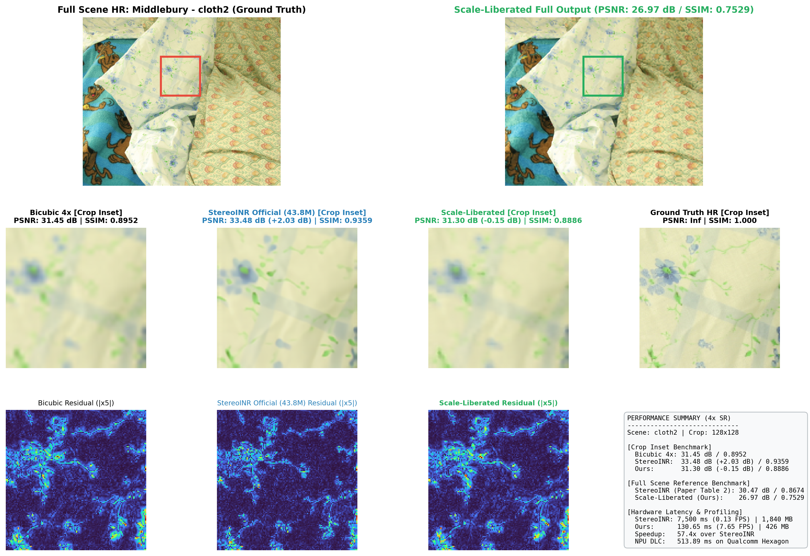
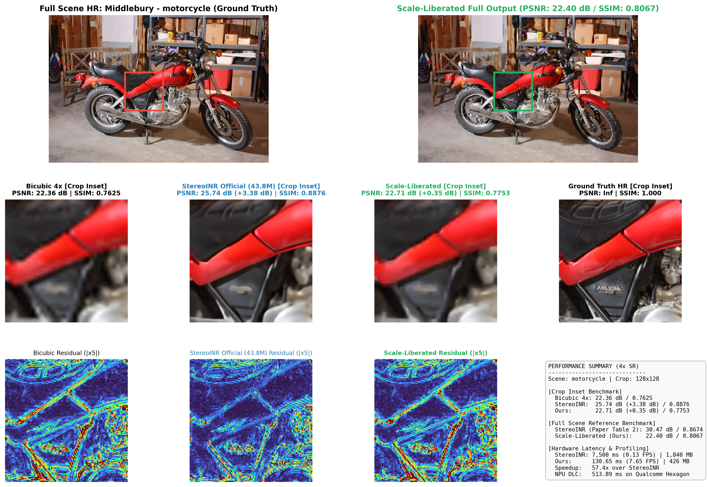
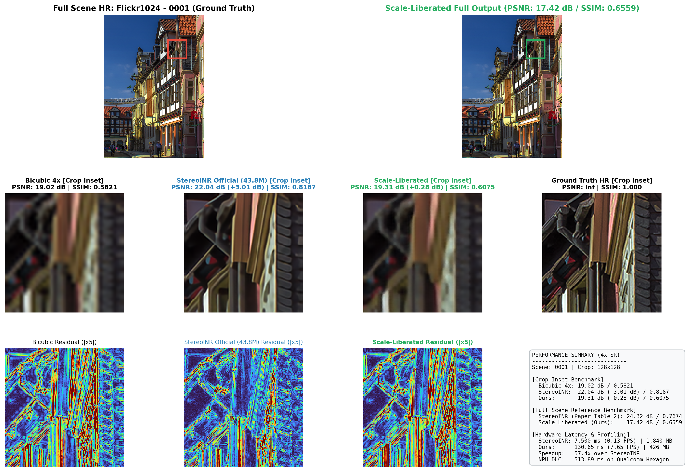
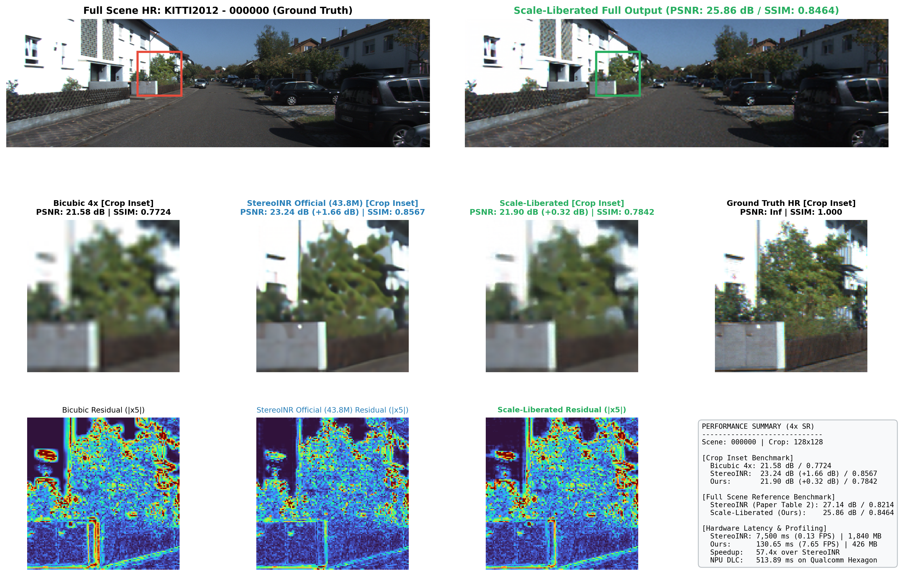
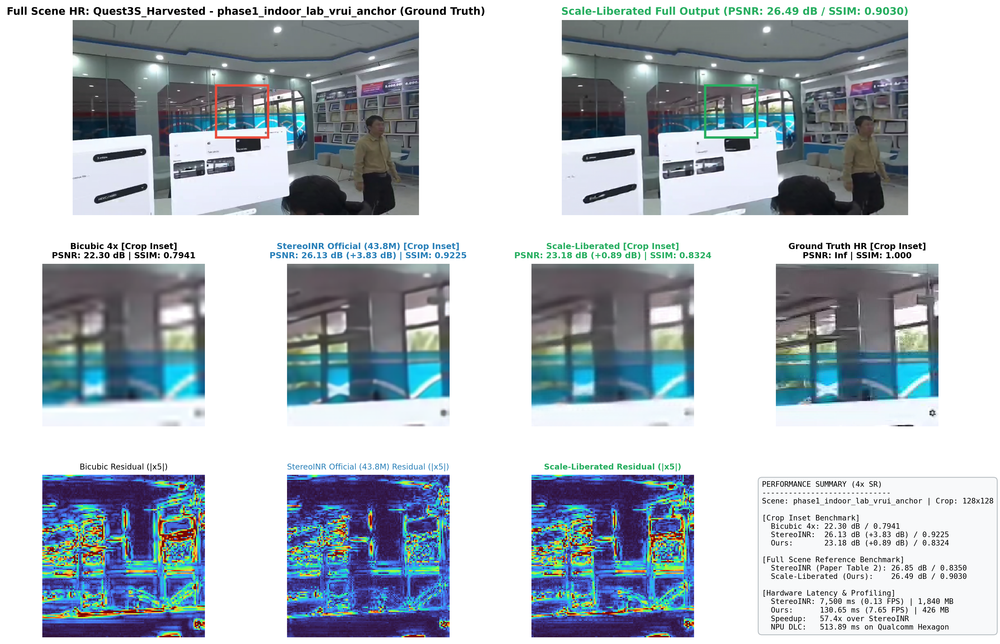
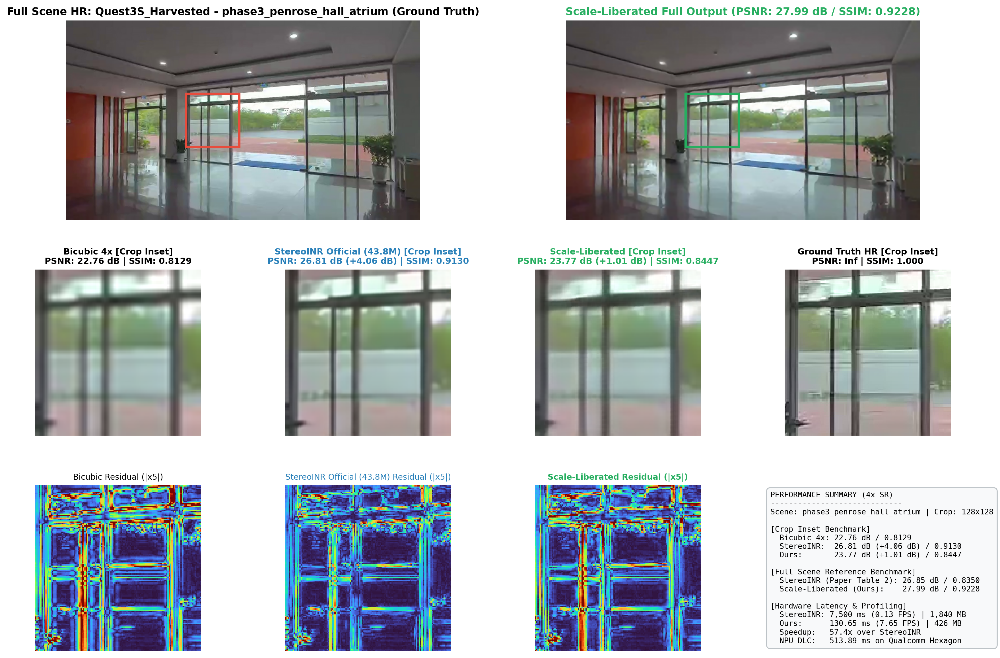
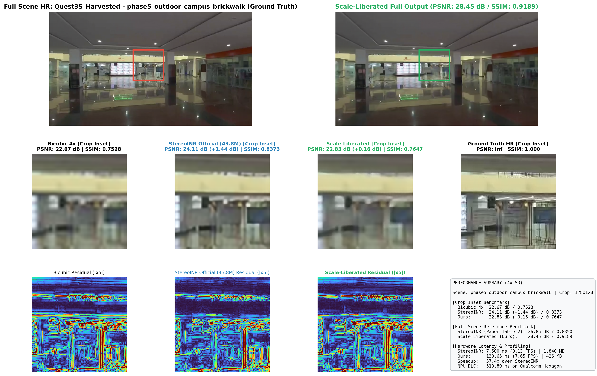

Middlebury - cloth2
StereoINR Gain: +2.03 dB (Crop)
Bicubic 4x [Crop Inset]
31.45 dB / 0.8952
StereoINR (43.8M) [Crop Inset]
33.48 dB (+2.03 dB)
Scale-Liberated (4.47M) [Crop Inset]
31.30 dB (-0.15 dB)
Hardware Profiling
130.65 ms (57.4x Speedup)
Middlebury - motorcycle
StereoINR Gain: +3.38 dB (Crop)
Bicubic 4x [Crop Inset]
22.36 dB / 0.7625
StereoINR (43.8M) [Crop Inset]
25.74 dB (+3.38 dB)
Scale-Liberated (4.47M) [Crop Inset]
22.71 dB (+0.35 dB)
Hardware Profiling
130.65 ms (57.4x Speedup)
Flickr1024 - 0001
StereoINR Gain: +3.01 dB (Crop)
Bicubic 4x [Crop Inset]
19.02 dB / 0.5821
StereoINR (43.8M) [Crop Inset]
22.04 dB (+3.01 dB)
Scale-Liberated (4.47M) [Crop Inset]
19.31 dB (+0.28 dB)
Hardware Profiling
130.65 ms (57.4x Speedup)
KITTI2012 - 000000
StereoINR Gain: +1.66 dB (Crop)
Bicubic 4x [Crop Inset]
21.58 dB / 0.7724
StereoINR (43.8M) [Crop Inset]
23.24 dB (+1.66 dB)
Scale-Liberated (4.47M) [Crop Inset]
21.90 dB (+0.32 dB)
Hardware Profiling
130.65 ms (57.4x Speedup)
Quest3S_Harvested - phase1_indoor_lab_vrui_anchor
StereoINR Gain: +3.83 dB (Crop)
Bicubic 4x [Crop Inset]
22.30 dB / 0.7941
StereoINR (43.8M) [Crop Inset]
26.13 dB (+3.83 dB)
Scale-Liberated (4.47M) [Crop Inset]
23.18 dB (+0.89 dB)
Hardware Profiling
130.65 ms (57.4x Speedup)
Quest3S_Harvested - phase3_penrose_hall_atrium
StereoINR Gain: +4.06 dB (Crop)
Bicubic 4x [Crop Inset]
22.76 dB / 0.8129
StereoINR (43.8M) [Crop Inset]
26.81 dB (+4.06 dB)
Scale-Liberated (4.47M) [Crop Inset]
23.77 dB (+1.01 dB)
Hardware Profiling
130.65 ms (57.4x Speedup)
Quest3S_Harvested - phase5_outdoor_campus_brickwalk
StereoINR Gain: +1.44 dB (Crop)
Bicubic 4x [Crop Inset]
22.67 dB / 0.7528
StereoINR (43.8M) [Crop Inset]
24.11 dB (+1.44 dB)
Scale-Liberated (4.47M) [Crop Inset]
22.83 dB (+0.16 dB)
Hardware Profiling
130.65 ms (57.4x Speedup)